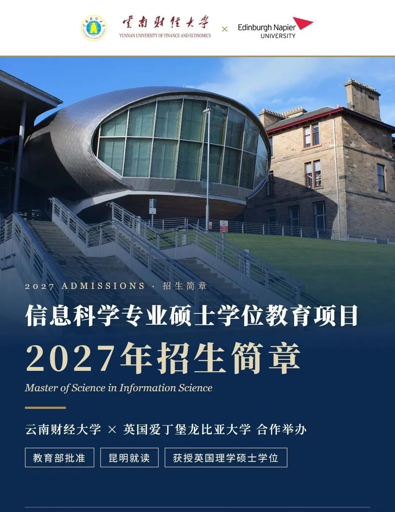
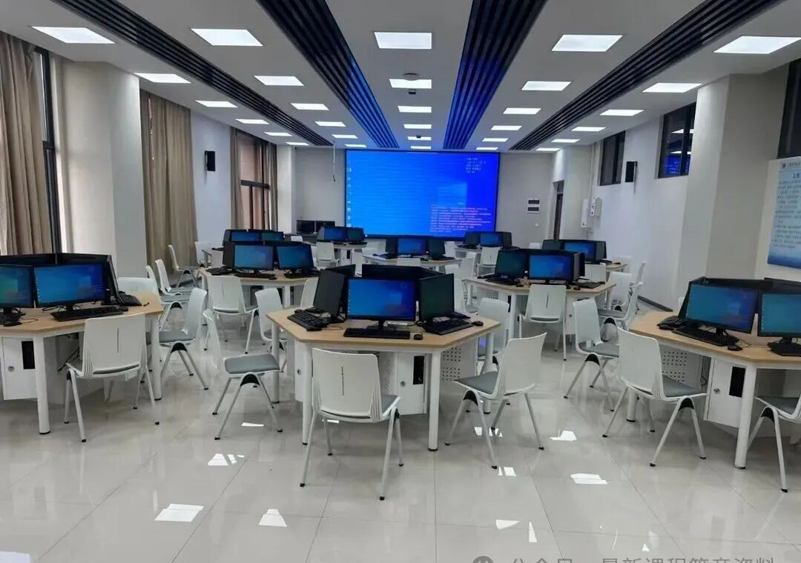

云南财经大学与英国爱丁堡龙比亚大学合作举办信息科学专业硕士学位教育项目，是经中华人民共和国教育部批准的中外合作办学项目，批准书编号为 MOE53UK1A20262853N。项目采用“2+0”培养模式，全部教学与管理环节在云南财经大学完成，学生无需出国；修满规定学分并通过学位论文评审与答辩后，授予英国爱丁堡龙比亚大学理学硕士学位证书。现将 2027 年招生有关事项整理如下。
项目全面引进英国爱丁堡龙比亚大学信息科学领域课程体系，由云南财经大学信息与人工智能学院承办，面向数字经济领域培养具备国际视野、跨学科知识结构与创新实践能力的信息科学专业人才。

一、项目速览
| 项目名称 | 云南财经大学与英国爱丁堡龙比亚大学合作举办信息科学专业硕士学位教育项目（2027 年） |
|---|---|
| 招生专业 | 信息科学（Information Science） |
| 批准书编号 | MOE53UK1A20262853N，有效期至 2032 年 12 月 31 日 |
| 培养模式 | “2+0”培养，昆明就读，无需出国 |
| 学制 | 2 年，弹性学制，最长修业年限不超过 5 年 |
| 招生计划 | 100 人 |
| 授课语言 | 中文、英文 |
| 学费 | 总额 179,000 元，分两个学年缴纳，每学年 89,500 元 |
| 报名时间 | 2026 年 11 月 1 日起预报名，2027 年 3 月 1 日起正式报名 |
| 授予学位 | 英国爱丁堡龙比亚大学理学硕士学位 |
| 授课地点 | 云南财经大学，云南省昆明市五华区龙泉路 237 号 |
项目资质可通过教育部中外合作办学监管工作信息平台（www.crs.jsj.edu.cn）查询，在“审批信息”栏目中检索“云南财经大学”即可查看批准信息。
二、合作院校与承办学院
云南财经大学始建于 1951 年，是一所以经济学、管理学为主，法学、文学、理学、工学、艺术等多学科协同发展的省属重点大学。学校现有全日制在校生 35,000 余人、专任教师 1,500 余人，设有 4 个一级学科博士点、5 个博士后科研流动站、12 个一级学科硕士点和 18 个专业学位硕士点，拥有国家级一流本科专业建设点 20 个。学校自 2004 年起举办中外合作硕士研究生教育项目，已与 30 多个国家和地区的 170 余所高校及机构建立合作关系。
英国爱丁堡龙比亚大学（Edinburgh Napier University）坐落于苏格兰首府爱丁堡，始建于 1964 年，1992 年获得大学地位，是一所公立综合性大学。学校在爱丁堡设有默奇斯顿、克雷格洛克哈特和赛特希尔三个主校区，以应用型、职业导向和国际化教育见长，在 QS 2027 世界大学排名中位列第 801—850 位。本项目英方课程由该校计算、工程与建筑环境学院承担；两校自 2012 年起合作举办金融学专业本科教育项目，合作基础扎实。
项目承办单位信息与人工智能学院，前身为 1999 年成立的计算机科学系，2007 年组建信息学院，2026 年 5 月更名为信息与人工智能学院。学院现有计算机科学与技术、信息管理与信息系统、人工智能、智能科学与技术、物联网工程、信息安全等 6 个本科专业，拥有计算机科学与技术一级学科硕士点和电子信息专业学位硕士点，建有云南省服务计算重点实验室等省级科研平台，着力探索“人工智能+财经”特色发展路径。
三、培养模式与培养特色
本项目实行“2+0”培养模式，全部教学与管理环节均在云南财经大学实施。项目引进英国爱丁堡龙比亚大学信息科学领域的课程体系与教学质量保障标准，英方核心课程的教学标准与英国本土保持一致；每门英方课程配备中方教师全程跟进，开展课前预习指导、课中随堂辅助和课后答疑帮扶。针对在职人员，项目制定了专门的教学计划，具体授课时间以项目教学安排为准。
培养特色体现在三个方面。其一，人工智能与经管交叉，聚焦信息与知识组织、知识管理、信息交互、信息安全治理与大语言模型应用，依托云南财经大学经济管理学科优势，面向数字经济培养复合型人才。其二，双校资源共享，学生可使用云南财经大学图书馆、计算机综合实验平台与校园数字服务，并按合作协议使用英方在线教学平台及图书馆电子资源。其三，平台化培养，学员来自不同行业与岗位，在课堂研讨、行业讲座与校外研学中与企业管理者、行业专家交流，论文选题对接真实业务需求。
实践教学贯穿 4 个学期，每学期开展 1 周校外集中实践，分为云南省内实践考察和国内发达地区交流研学，围绕面向南亚东南亚数字信息大通道、跨境数字经济、多语种信息服务、民族地区数字赋能、生态环境信息治理及前沿技术应用等领域开展。实践活动由中方教师带队，配备辅导员全程陪同，学生提交实践报告并由专职教师评定成绩；具体安排以项目实际组织为准。

四、学制、录取方式、学位与学费
学制为 2 年，实行弹性学制，最长修业年限不超过 5 年。本项目属中外合作办学自主招生项目，由云南财经大学自主命题，考生无需参加全国硕士研究生招生考试。
学生在规定修业年限内修满规定学分并通过学位论文评审与答辩，经英国爱丁堡龙比亚大学审核，授予该校理学硕士学位证书。该证书与英国本土学生所获证书一致，可经教育部留学服务中心认证，其在国内的效力与认可度等同于赴英国本校就读所取得的对应学位。
学费总额 179,000 元，分两个学年缴纳，每学年 89,500 元。具体收费标准以按规定报价格主管部门备案（核定）的标准为准；退费按国家和云南省有关规定及学校相关管理办法执行。
五、报考条件
报考人员须拥护中国共产党的领导，遵纪守法，品德良好，身体健康；学历须符合下列条件之一：
- 国家承认学历的应届本科毕业生，含普通高校、成人高校、普通高校举办的成人高等学历教育等应届本科毕业生，以及自学考试和网络教育届时可毕业的本科生；
- 具有国家承认的大学本科毕业学历的人员；
- 获得国家承认的高职（专科）毕业学历后满 2 年（从毕业后到 2027 年 7 月），具有相应工作经验的人员；
- 已获得硕士、博士研究生学历或学位的人员。
六、报名与入学考核
报名时间自 2026 年 11 月 1 日起开始预报名，正式报名时间为 2027 年 3 月 1 日，具体起止时间以报名网站公告为准。报名采用网络报名方式，报名网址待定、另行公布。考生须按要求如实填写报名信息并上传相关材料；因信息填写错误、填报虚假信息造成不能考试或录取的，后果由考生本人承担。学校对网上填报的学籍、学历等信息进行全面审查，符合报考条件者准予参加入学考核；弄虚作假者一经查实，取消报考资格，已录取的取消录取资格。
入学考核由笔试和面试两部分组成，考生不参加全国统考。笔试占总成绩的 40%，由学校自主命题、闭卷考试，时长 2 小时，考查专业基础和英语能力；英语能力测试参考书目为《剑桥雅思官方真题集 18·学术类》《剑桥雅思官方真题集 19·学术类》《剑桥雅思官方真题集 20·学术类》（群言出版社）。面试占总成绩的 60%，主要考查专业综合能力、英语听说能力和综合素质。
考生登录报名网站自行下载打印《准考证》，具体时间以报名网站公告为准。笔试和面试的具体时间以《准考证》为准，考核地点为云南财经大学（云南省昆明市五华区龙泉路 237 号）。总成绩＝笔试成绩×40%＋面试成绩×60%，入学考核成绩在学院网站公示。
七、录取与监督
学校依据招生计划，按照考生总成绩、思想政治表现等择优确定拟录取名单，经学院招生工作领导小组审核后，在学院网站公示 3 天，公示期满无异议后发放录取通知书。考生考试诚信状况作为思想品德考核的重要内容和录取的重要依据，思想品德考核不合格者不予录取。
应届本科毕业生及自学考试和网络教育届时可毕业本科生的拟录取考生，须在 2027 年 7 月前取得国家承认的国（境）内高校本科毕业证书，或教育部留学服务中心出具的《国（境）外学历学位认证书》；未在规定时间内取得相关证书的，录取资格无效。招生工作接受云南财经大学研究生院和学校纪委的指导和监督，所有招生环节进行必要的录音、录像。
八、常见问题
需要出国学习吗？不需要。本项目实行“2+0”模式，全部教学与管理环节在云南财经大学完成。
毕业获得什么证书？英国爱丁堡龙比亚大学理学硕士学位证书，与英国本土一致；获得学位不以出国学习为必要条件，该学位经教育部留学服务中心认证后，在国内的效力与认可度等同于赴英国本校就读所取得的对应学位。
需要参加全国研究生统考吗？不需要。本项目为中外合作办学自主招生项目，参加学校自主组织的笔试和面试。
如何核验项目资质？登录教育部中外合作办学监管工作信息平台，查询批准书编号 MOE53UK1A20262853N，有效期至 2032 年 12 月 31 日。
专科学历可以报考吗？可以。获得国家承认的高职（专科）学历后满 2 年（截至 2027 年 7 月）并具有相应工作经验者可报考，须提交工作证明。
在职人员可以报读吗？可以报考。本项目针对在职人员制定了专门的教学计划，具体授课时间以项目教学安排为准。
学费如何缴纳？学费总额 17.9 万元，分两学年缴纳，每学年 8.95 万元，具体以按规定备案（核定）的收费标准为准。
什么时候开始报名？2026 年 11 月 1 日起开始预报名，正式报名时间为 2027 年 3 月 1 日，具体起止时间以报名网站公告为准。
如何获取最新招生信息？以云南财经大学及信息与人工智能学院官方渠道发布的信息为准。
九、报名材料
- 居民身份证；
- 本人近期证件照，白底彩色照片，45mm×35mm；
- 本科毕业证书和学位证书，或专科毕业证书，或硕士、博士研究生学历学位证书；
- 工作证明原件，以专科学历报考者必须提交；
- 学历（学籍）认证报告：学信网《教育部学历证书电子注册备案表》（有效期至 2027 年 9 月），或全国高等学校学生信息咨询与就业指导中心出具的《中国高等教育学历认证报告》；境外学历须提交教育部留学服务中心出具的《国（境）外学历学位认证书》；
- 《云南财经大学与英国爱丁堡龙比亚大学合作培养硕士学位研究生思想政治情况调查表》原件。
十、其他说明
招生信息以云南财经大学及信息与人工智能学院官方渠道发布的为准。招生时间和相关安排如因特殊原因调整，以学校另行发布的通知为准。本简章由云南财经大学信息与人工智能学院负责解释。项目报名网址尚未公布，请持续关注学校官方渠道。
如需核验项目批准信息，可访问教育部中外合作办学监管工作信息平台（www.crs.jsj.edu.cn），在“审批信息”栏目查询“云南财经大学”。